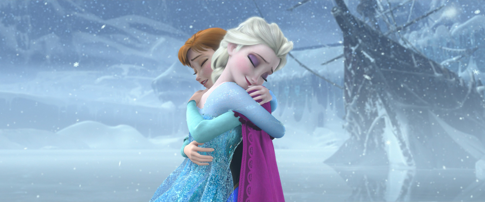

🌻 安娜 · 阿伦黛尔女王
安娜卷 · 阿伦黛尔女王
🌻 安娜 · 卷首
安娜 · 从天真公主到阿伦黛尔女王
安娜卷 · 阿伦黛尔女王
35
本卷页数
2
主电影
中/英
双语
安娜（Anna）是阿伦黛尔的小公主、艾莎的妹妹，也是整个《冰雪奇缘》故事的情感核心。与大多数童话“有超能力者是主角”不同，安娜自认“完全普通”——她没有魔法，却以“不放弃、愿意为你牺牲”的坚毅，成为连接所有人的纽带，并最…

🌻 安娜是谁
安娜（Anna）是阿伦黛尔的小公主、艾莎的妹妹，也是整个《冰雪奇缘》故事的情感核心
。与大多数童话“有超能力者是主角”不同，安娜自认“完全普通”——她没有魔法，却以“不放弃、愿意为你牺牲”的坚毅，成为连接所有人的纽带，并最终接任阿伦黛尔女王。她的弧光从“被隔离的孤独公主”到“为爱牺牲的勇者”再到“独当一面的女王”，证明了真正的力量不一定是魔法——乐观、忠诚、行动力，以及“做下一件对的事”的勇气，同样可以改变世界。
📖 本卷目录
- 人物档案 ：基本信息、性格特质、外貌特征
- 成长之路 ：童年与隔离 → F1 真爱之举 → F2 领导者之路
- 安娜与艾莎 ：姐妹羁绊的完整梳理
- 人物关系 ：克里斯托夫、雪宝、汉斯、父母等
- 歌曲 ：Do You Want to Build a Snowman / For the First Time / The Next Right Thing
- 造型设计 ：从童年到女王的造型演变
- 小说 ：安娜在官方小说中的故事经历
- 经典台词 ：串起安娜完整弧光的金句


📌 本页要点
你正在阅读《安娜》卷的“封面”。本页由电影正典、官方设定集与官方小说综合梳理，可作为该主题的速查入口；右侧目录可快速跳转到本页各小节。